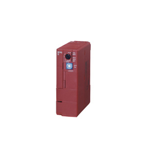
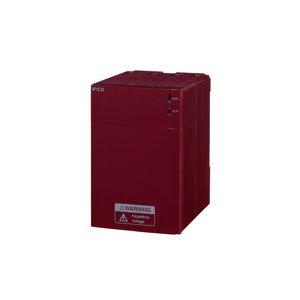
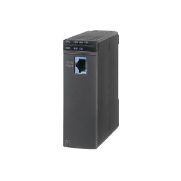

確認すべきポイント
モジュール正面パネルに印字されている 「NP1L-ET1」 または 「NP1L-ET2」 の型番文字列。
LANポート上部または銘板シールに記載されている。シリアル番号・製造番号も同じ位置に並んで印字されている。
📸 髙橋様にお願いするのは「通信モジュール正面の銘板写真を1枚」だけ。これだけで確定する。
アイシン高丘東北・電気炉系制御盤に設置されている富士電機 MICREX-SX SPHシリーズ。CPU・電源は判明、通信モジュールのみ機種不明。



| 項目 | NP1L-ET1 | NP1L-ET2 |
|---|---|---|
| 物理層 | 10BASE-T | 10/100BASE-TX |
| 世代 | 旧世代 | 後継・現行 |
| 主用途 | FL-net | FL-net（高速） |
| 外観差 | ほぼ同一 — 銘板で確認するのが確実 | |
制御盤を開け、通信モジュール正面パネルの銘板（型番印字）を読む。富士電機のNシリーズはモジュール上面〜中央部に型番が印字されている。
モジュール正面パネルに印字されている 「NP1L-ET1」 または 「NP1L-ET2」 の型番文字列。
LANポート上部または銘板シールに記載されている。シリアル番号・製造番号も同じ位置に並んで印字されている。
制御盤・PLCの設置時に作成された資料に部品リスト（BOM）が含まれている。以下のいずれかを保全担当者・購買担当者に依頼。
富士電機純正のプログラミングツールで実機にオンライン接続し、システム定義画面から自動取得する。
保全担当者・PLC技術者なら所有している可能性が高い。
電気炉据付業者または富士電機代理店に問い合わせる。モジュール側面のシリアル番号と一緒に伝えれば即時回答が得られる。
方法01が圧倒的に最短。髙橋様へメール／チャットで以下を依頼する。